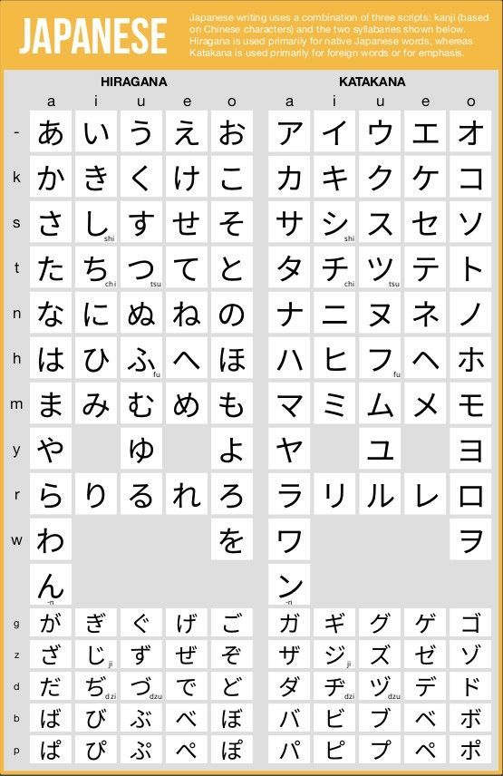

Remembering the Kanji
Hello!
My Japanese studies have been going quite well! Unfortunately, to get to the real meat and potatoes of what I have been up to, I need to frontload this blog post with some brief context for how the Japanese alphabet works.
Basics of Japanese
To follow my Japanese learning journey effectively, you must be familiar with some basic concepts and information about the language. Arguably, the most important of these is the three writing systems used: Hiragana, Katakana, and Kanji. The first two are almost trivial compared to the last.
Japanese people write phonetically; each sound that makes up a word translates directly to a character on paper (unlike English, where the letter ‘e’ can make seven distinct sounds). For example, the Hiragana character ‘か’ makes a “ka” sound.
Katakana is the same as Hiragana, but is only used for loanwords in Japanese; there is no difference heard when speaking. For example:
Katakana: “インタネット” (internet), pronounced in-ta-ne-to
Hiragana: “こんにちは” (hello), pronounced ko-ni-chi-wa
I will include a picture of the charts for these writing systems, but you do not need to know them to follow along!
The final writing system, Kanji, is the most challenging of the three. It is logographic—each character represents a specific word with a specific pronunciation. To be considered functionally literate in Japan, you must know at least 2000 Kanji. This is what I believe will be the most challenging part of my learning journey.
Mnemonics
Over the last few days, I have been gradually adding words from word lists online into my personal Anki flashcard deck. When I first started reviewing my cards, however, I found that I was really struggling to remember the kanji associated with a word.
I went online to try to see if anyone had any tips, and came across a suggestion from a user on a Japanese learning forum: mnemonics, a word I only need 3–5 tries to spell. What it is, at its core, is just like a little story to help you remember something. The idea being, that it is harder for our brains to recall something in isolation, rather than like a story. It’s a lot like creating memories for each word.
Currently, I am learning about twenty new words a day with Anki, and ever since I started making mnemonics for each word, my retention rate from day to day went from 72% to 94%! At this rate, by the time I leave, I will know over 1500 words!
Sign Off
That’s all I have for right now! I’m sorry this post was so focused on making you understand how the Japanese writing system works, but I promise it will save you a ton of confusion down the road!
Bye for now, Max

コメント